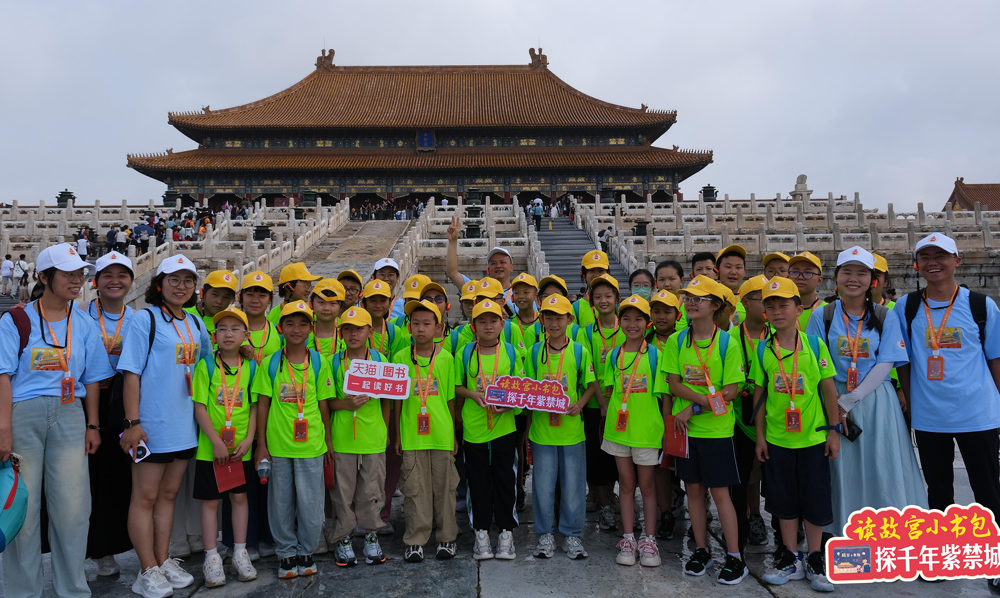

8月18日，2024年“故宫小书包”北京公益游学活动开启。来自甘肃、贵州、山东、内蒙古等6个省（区）的7所乡村学校共34名乡村孩子，作为“历史探秘小使者”和他们的7名老师一起走进故宫，切实感受故宫的厚重历史与艺术文化的魅力。
师生们在故宫博物院的专业讲解老师和故宫出版社老师的带领下，游览了故宫的中轴线、钟表馆、珍宝馆，品尝了美味的北京烤鸭和炸酱面。还在出版社老师的专业指导下，来到紫禁书院，体验了一堂生动有趣的国画课。小使者们通过不同的形式学习、体会、感悟到故宫及其蕴藏的中华优秀传统文化。充实美好的一天，不仅让孩子们得到视听美的享受，更有了直抵心灵的触动，激发了孩子们对历史和中华优秀传统文化的兴趣与热爱。
